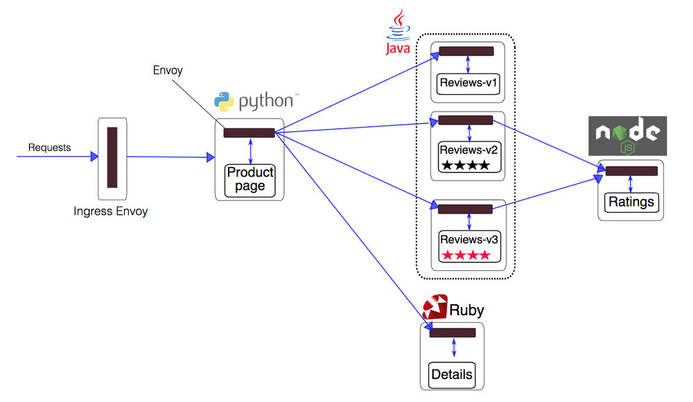
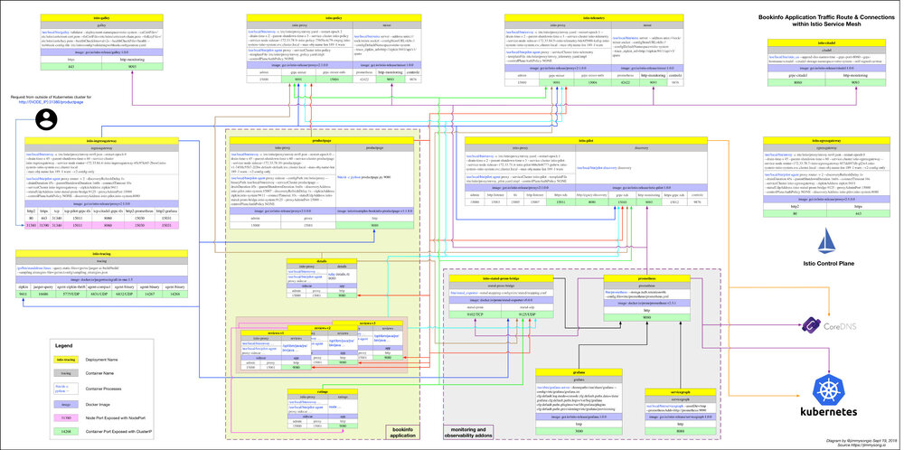
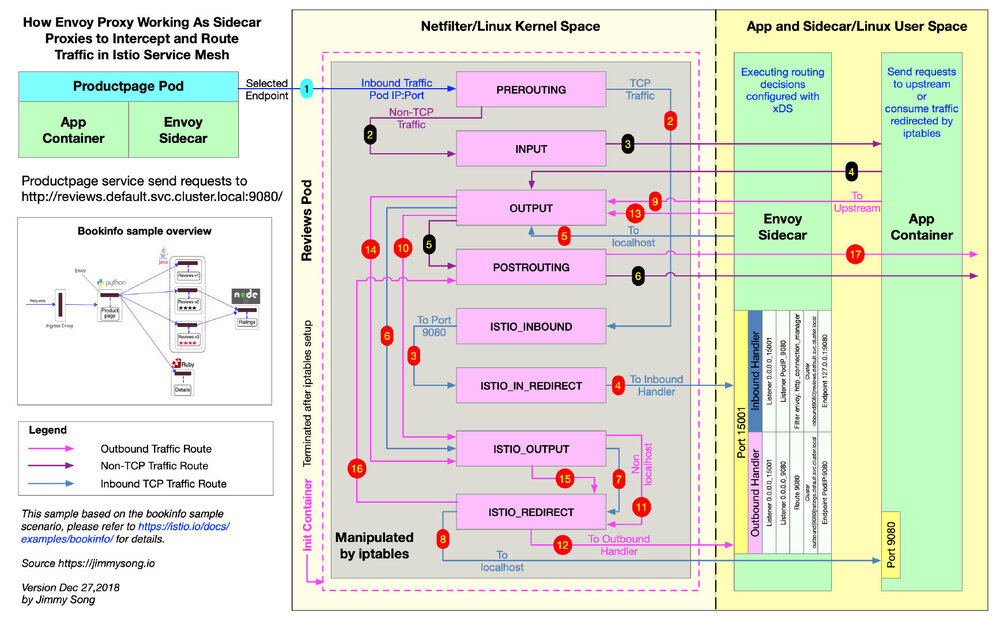

本文以 Istio 官方的 bookinfo 示例来讲解在进入 Pod 的流量被 iptables 转交给 Envoy sidecar 后，Envoy 是如何做路由转发的，详述了 Inbound 和 Outbound 处理过程。关于流量拦截的详细分析请参考理解 Istio Service Mesh 中 Envoy 代理 Sidecar 注入及流量劫持。
下面是 Istio 官方提供的 bookinfo 的请求流程图，假设 bookinfo 应用的所有服务中没有配置 DestinationRule。

下面是 Istio 自身组件与 Bookinfo 示例的连接关系图，我们可以看到所有的 HTTP 连接都在 9080 端口监听。

可以在 Google Drive 上下载原图。
Sidecar 注入及流量劫持步骤概述
下面是从 Sidecar 注入、Pod 启动到 Sidecar proxy 拦截流量及 Envoy 处理路由的步骤概览。
1. Kubernetes 通过 Admission Controller 自动注入，或者用户使用 istioctl 命令手动注入 sidecar 容器。
2. 应用 YAML 配置部署应用，此时 Kubernetes API server 接收到的服务创建配置文件中已经包含了 Init 容器及 sidecar proxy。
3. 在 sidecar proxy 容器和应用容器启动之前，首先运行 Init 容器，Init 容器用于设置 iptables（Istio 中默认的流量拦截方式，还可以使用 BPF、IPVS 等方式） 将进入 pod 的流量劫持到 Envoy sidecar proxy。所有 TCP 流量（Envoy 目前只支持 TCP 流量）将被 sidecar 劫持，其他协议的流量将按原来的目的地请求。
4. 启动 Pod 中的 Envoy sidecar proxy 和应用程序容器。这一步的过程请参考通过管理接口获取完整配置。
Sidecar proxy 与应用容器的启动顺序问题
启动 sidecar proxy 和应用容器，究竟哪个容器先启动呢？正常情况是 Envoy Sidecar 和应用程序容器全部启动完成后再开始接收流量请求。但是我们无法预料哪个容器会先启动，那么容器启动顺序是否会对 Envoy 劫持流量有影响呢？答案是肯定的，不过分为以下两种情况。
情况1：应用容器先启动，而 sidecar proxy 仍未就绪
这种情况下，流量被 iptables 转移到 15001 端口，而 Pod 中没有监听该端口，TCP 链接就无法建立，请求失败。
情况2：Sidecar 先启动，请求到达而应用程序仍未就绪
这种情况下请求也肯定会失败，至于是在哪一步开始失败的，留给读者来思考。
问题：如果为 sidecar proxy 和应用程序容器添加就绪和存活探针是否可以解决该问题呢？
5. 不论是进入还是从 Pod 发出的 TCP 请求都会被 iptables 劫持，inbound 流量被劫持后经 Inbound Handler 处理后转交给应用程序容器处理，outbound 流量被 iptables 劫持后转交给 Outbound Handler 处理，并确定转发的 upstream 和 Endpoint。
6. Sidecar proxy 请求 Pilot 使用 xDS 协议同步 Envoy 配置，其中包括 LDS、EDS、CDS 等，不过为了保证更新的顺序，Envoy 会直接使用 ADS 向 Pilot 请求配置更新。
Envoy 如何处理路由转发
下图展示的是 productpage 服务请求访问 http://reviews.default.svc.cluster.local:9080/，当流量进入 reviews 服务内部时，reviews 服务内部的 Envoy Sidecar 是如何做流量拦截和路由转发的。可以在 Google Drive 上下载原图。

第一步开始时，productpage Pod 中的 Envoy sidecar 已经通过 EDS 选择出了要请求的 reviews 服务的一个 Pod，知晓了其 IP 地址，发送 TCP 连接请求。
Istio 官网中的 Envoy 配置深度解析中是以发起 HTTP 请求的一方来详述 Envoy 做流量转发的过程，而本文中考虑的是接受 downstream 的流量的一方，它既要接收 downstream 发来的请求，自己还需要请求其他服务，例如 reviews 服务中的 Pod 还需要请求 ratings 服务。
reviews 服务有三个版本，每个版本有一个实例，三个版本中的 sidecar 工作步骤类似，下文只以 reviews-v1-cb8655c75-b97zc 这一个 Pod 中的 Sidecar 流量转发步骤来说明。
理解 Inbound Handler
Inbound handler 的作用是将 iptables 拦截到的 downstream 的流量转交给 localhost，与 Pod 内的应用程序容器建立连接。
查看下 reviews-v1-cb8655c75-b97zc pod 中的 Listener。
运行 istioctl pc listener reviews-v1-cb8655c75-b97zc 查看该 Pod 中的具有哪些 Listener。
ADDRESS PORT TYPE
172.33.3.3 9080 HTTP <--- 接收所有 Inbound HTTP 流量，该地址即为当前 Pod 的 IP 地址
10.254.0.1 443 TCP <--+
10.254.4.253 80 TCP |
10.254.4.253 8080 TCP |
10.254.109.182 443 TCP |
10.254.22.50 15011 TCP |
10.254.22.50 853 TCP |
10.254.79.114 443 TCP |
10.254.143.179 15011 TCP |
10.254.0.2 53 TCP | 接收与 0.0.0.0_15001 监听器配对的 Outbound 非 HTTP 流量
10.254.22.50 443 TCP |
10.254.16.64 42422 TCP |
10.254.127.202 16686 TCP |
10.254.22.50 31400 TCP |
10.254.22.50 8060 TCP |
10.254.169.13 14267 TCP |
10.254.169.13 14268 TCP |
10.254.32.134 8443 TCP |
10.254.118.196 443 TCP <--+
0.0.0.0 15004 HTTP <--+
0.0.0.0 8080 HTTP |
0.0.0.0 15010 HTTP |
0.0.0.0 8088 HTTP |
0.0.0.0 15031 HTTP |
0.0.0.0 9090 HTTP |
0.0.0.0 9411 HTTP | 接收与 0.0.0.0_15001 配对的 Outbound HTTP 流量
0.0.0.0 80 HTTP |
0.0.0.0 15030 HTTP |
0.0.0.0 9080 HTTP |
0.0.0.0 9093 HTTP |
0.0.0.0 3000 HTTP |
0.0.0.0 8060 HTTP |
0.0.0.0 9091 HTTP <--+
0.0.0.0 15001 TCP <--- 接收所有经 iptables 拦截的 Inbound 和 Outbound 流量并转交给虚拟监听器处理
当来自 productpage 的流量抵达 reviews Pod 的时候已经，downstream 必须明确知道 Pod 的 IP 地址为 172.33.3.3 所以才会访问该 Pod，所以该请求是 172.33.3.3:9080。
virtual Listener
从该 Pod 的 Listener 列表中可以看到，0.0.0.0:15001/TCP 的 Listener（其实际名字是 virtual）监听所有的 Inbound 流量，下面是该 Listener 的详细配置。
{
"name": "virtual",
"address": {
"socketAddress": {
"address": "0.0.0.0",
"portValue": 15001
}
},
"filterChains": [
{
"filters": [
{
"name": "envoy.tcp_proxy",
"config": {
"cluster": "BlackHoleCluster",
"stat_prefix": "BlackHoleCluster"
}
}
]
}
],
"useOriginalDst": true
}
UseOriginalDst：从配置中可以看出 useOriginalDst 配置指定为 true，这是一个布尔值，缺省为 false，使用 iptables 重定向连接时，proxy 接收的端口可能与原始目的地址的端口不一样，如此处 proxy 接收的端口为 15001，而原始目的地端口为 9080。当此标志设置为 true 时，Listener 将连接重定向到与原始目的地址关联的 Listener，此处为 172.33.3.3:9080。如果没有与原始目的地址关联的 Listener，则连接由接收它的 Listener 处理，即该 virtual Listener，经过 envoy.tcp_proxy 过滤器处理转发给 BlackHoleCluster，这个 Cluster 的作用正如它的名字，当 Envoy 找不到匹配的虚拟监听器时，就会将请求发送给它，并返回 404。这个将于下文提到的 Listener 中设置 bindToPort 相呼应。
注意：该参数将被废弃，请使用原始目的地址的 Listener filter 替代。该参数的主要用途是：Envoy 通过监听 15001 端口将 iptables 拦截的流量经由其他 Listener 处理而不是直接转发出去，详情见 Virtual Listener。
Listener 172.33.3.3_9080
上文说到进入 Inbound handler 的流量被 virtual Listener 转移到 172.33.3.3_9080 Listener，我们在查看下该 Listener 配置。
运行 istioctl pc listener reviews-v1-cb8655c75-b97zc --address 172.33.3.3 --port 9080 -o json 查看。
[{
"name": "172.33.3.3_9080",
"address": {
"socketAddress": {
"address": "172.33.3.3",
"portValue": 9080
}
},
"filterChains": [
{
"filterChainMatch": {
"transportProtocol": "raw_buffer"
},
"filters": [
{
"name": "envoy.http_connection_manager",
"config": {
...
"route_config": {
"name": "inbound|9080||reviews.default.svc.cluster.local",
"validate_clusters": false,
"virtual_hosts": [
{
"domains": [
"*"
],
"name": "inbound|http|9080",
"routes": [
{
...
"route": {
"cluster": "inbound|9080||reviews.default.svc.cluster.local",
"max_grpc_timeout": "0.000s",
"timeout": "0.000s"
}
}
]
}
]
},
"use_remote_address": false,
...
}
}
]，
"deprecatedV1": {
"bindToPort": false
}
...
},
{
"filterChainMatch": {
"transportProtocol": "tls"
},
"tlsContext": {...
},
"filters": [...
]
}
],
...
}]
bindToPort：注意其中有一个 bindToPort 的配置，其值为 false，该配置的缺省值为 true，表示将 Listener 绑定到端口上，此处设置为 false 则该 Listener 只能处理其他 Listener 转移过来的流量，即上文所说的 virtual Listener，我们看其中的 filterChains.filters 中的 envoy.http_connection_manager 配置部分：
"route_config": {
"name": "inbound|9080||reviews.default.svc.cluster.local",
"validate_clusters": false,
"virtual_hosts": [
{
"domains": [
"*"
],
"name": "inbound|http|9080",
"routes": [
{
...
"route": {
"cluster": "inbound|9080||reviews.default.svc.cluster.local",
"max_grpc_timeout": "0.000s",
"timeout": "0.000s"
}
}
]
}
]
}
该配置表示流量将转交给 Cluster inbound|9080||reviews.default.svc.cluster.local 处理。
Cluster inbound|9080||reviews.default.svc.cluster.local
运行 istioctl pc cluster reviews-v1-cb8655c75-b97zc --fqdn reviews.default.svc.cluster.local --direction inbound -o json 查看该 Cluster 的配置如下。
[
{
"name": "inbound|9080||reviews.default.svc.cluster.local",
"connectTimeout": "1.000s",
"hosts": [
{
"socketAddress": {
"address": "127.0.0.1",
"portValue": 9080
}
}
],
"circuitBreakers": {
"thresholds": [
{}
]
}
}
]
可以看到该 Cluster 的 Endpoint 直接对应的就是 localhost，再经过 iptables 转发流量就被应用程序容器消费了。
理解 Outbound Handler
因为 reviews 会向 ratings 服务发送 HTTP 请求，请求的地址是：http://ratings.default.svc.cluster.local:9080/，Outbound handler 的作用是将 iptables 拦截到的本地应用程序发出的流量，经由 Envoy 判断如何路由到 upstream。
应用程序容器发出的请求为 Outbound 流量，被 iptables 劫持后转移给 Envoy Outbound handler 处理，然后经过 virtual Listener、0.0.0.0_9080 Listener，然后通过 Route 9080 找到 upstream 的 cluster，进而通过 EDS 找到 Endpoint 执行路由动作。这一部分可以参考 Istio 官网中的 Envoy 深度配置解析。
Route 9080
reviews 会请求 ratings 服务，运行 istioctl proxy-config routes reviews-v1-cb8655c75-b97zc --name 9080 -o json 查看 route 配置，因为 Envoy 会根据 HTTP header 中的 domains 来匹配 VirtualHost，所以下面只列举了 ratings.default.svc.cluster.local:9080 这一个 VirtualHost。
[{
"name": "ratings.default.svc.cluster.local:9080",
"domains": [
"ratings.default.svc.cluster.local",
"ratings.default.svc.cluster.local:9080",
"ratings",
"ratings:9080",
"ratings.default.svc.cluster",
"ratings.default.svc.cluster:9080",
"ratings.default.svc",
"ratings.default.svc:9080",
"ratings.default",
"ratings.default:9080",
"10.254.234.130",
"10.254.234.130:9080"
],
"routes": [
{
"match": {
"prefix": "/"
},
"route": {
"cluster": "outbound|9080||ratings.default.svc.cluster.local",
"timeout": "0.000s",
"maxGrpcTimeout": "0.000s"
},
"decorator": {
"operation": "ratings.default.svc.cluster.local:9080/*"
},
"perFilterConfig": {...
}
}
]
},
..]
从该 Virtual Host 配置中可以看到将流量路由到 Cluster outbound|9080||ratings.default.svc.cluster.local。
Endpoint outbound|9080||ratings.default.svc.cluster.local
Istio 1.1 以前版本不支持使用 istioctl 命令直接查询 Cluster 的 Endpoint，可以使用查询 Pilot 的 debug 端点的方式折中。
kubectl exec reviews-v1-cb8655c75-b97zc -c istio-proxy curl http://istio-pilot.istio-system.svc.cluster.local:9093/debug/edsz > endpoints.json
endpoints.json 文件中包含了所有 Cluster 的 Endpoint 信息，我们只选取其中的 outbound|9080||ratings.default.svc.cluster.local Cluster 的结果如下。
{
"clusterName": "outbound|9080||ratings.default.svc.cluster.local",
"endpoints": [
{
"locality": {
},
"lbEndpoints": [
{
"endpoint": {
"address": {
"socketAddress": {
"address": "172.33.100.2",
"portValue": 9080
}
}
},
"metadata": {
"filterMetadata": {
"istio": {
"uid": "kubernetes://ratings-v1-8558d4458d-ns6lk.default"
}
}
}
}
]
}
]
}
Endpoint 可以是一个或多个，Envoy 将根据一定规则选择适当的 Endpoint 来路由。
注：Istio 1.1 将支持 istioctl pc endpoint 命令来查询 Endpoint。